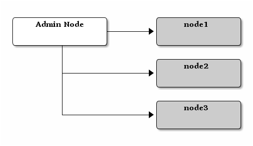

手动部署¶
所有 Ceph 集群都需要至少一个监视器、且 OSD 数量不小于副本数。自举引导初始监视器是部署 Ceph 存储集群的第一步，监视器的部署也为整个集群奠定了重要框架，如存储池副本数、每个 OSD 拥有的归置组数量、心跳周期、是否需认证等，其中大多数选项都有默认值，但是建设生产集群时仍需要您熟知它们。
按照安装（快速）里的相同配置，我们能配置起监视器为
node1 ， OSD 节点为 node2 、 node3 的集群。

监视器的自举引导¶
自举引导监视器（理论上是 Ceph 存储集群）需要以下几个条件：
惟一标识符：
fsid是集群的惟一标识，它是 Ceph 作为文件系统时的文件系统标识符。现在， Ceph 还支持原生接口、块设备、和对象存储网关接口，所以fsid有点名不符实了。集群名称： 每个 Ceph 集群都有自己的名字，它是个不含空格的字符串。默认名字是
ceph、但你可以更改；尤其是运营着多个集群时，需要用名字来区分要操作哪一个。比如，当你在一个多站配置中运营多个集群时，集群名字（如
us-west、us-east）将作为标识符出现在 CLI 界面上。注意：要在命令行下指定某个集群，可以指定以集群名为前缀的配置文件（如ceph.conf、us-west.conf、us-east.conf等）；也可以参考 CLI 用法（ceph --cluster {cluster-name}）。监视器名字： 同一集群内的各监视器例程都有惟一的名字，通常都用主机名作为监视器名字（我们建议每台主机只运行一个监视器、并且不要与 OSD 主机复用。短主机名可以用
hostname -s获取。监视器图： 自举引导初始监视器需要生成监视器图，为此，需要有
fsid、集群名（或用默认）、至少一个主机名及其 IP 。监视器密钥环： 监视器之间通过密钥通讯，所以你必须把监视器密钥加入密钥环，并在自举引导时提供。
管理密钥环： 要使用
ceph这个命令行工具，你必须有client.admin用户，所以你要创建此用户及其密钥，并把他们加入密钥环。
前述必要条件并未提及 Ceph 配置文件的创建，然而，实践中最好创建个配置文件，并写好 fsid 、 mon initial members 和 mon host 配置。
你也可以查看或设置运行时配置。 Ceph 配置文件可以只包含非默认配置， Ceph 配置文件的配置将覆盖默认值，把这些配置保存在配置文件里可简化维护。
具体过程如下：
登录到初始监视器节点：
ssh {hostname}
如：
ssh node1
确保保存 Ceph 配置文件的目录存在， Ceph 默认使用
/etc/ceph。安装ceph软件时，安装器也会自动创建/etc/ceph/目录。ls /etc/ceph
注意：部署工具在清除集群时可能删除此目录（如
ceph-deploy purgedata {node-name}、ceph-deploy purge {node-name}）。创建 Ceph 配置文件， Ceph 默认使用
ceph.conf，其中的ceph是集群名字。sudo vim /etc/ceph/ceph.conf
给集群分配惟一 ID （即
fsid）。uuidgen把此 ID 写入 Ceph 配置文件。
fsid = {UUID}
例如：
fsid = a7f64266-0894-4f1e-a635-d0aeaca0e993
把初始监视器写入 Ceph 配置文件。
mon initial members = {hostname}[,{hostname}]
例如：
mon initial members = node1
把初始监视器的 IP 地址写入 Ceph 配置文件、并保存。
mon host = {ip-address}[,{ip-address}]
例如：
mon host = 192.168.0.1
注意： 你可以用 IPv6 地址取代 IPv4 地址，但必须设置
ms bind ipv6 = true。详情见网络配置参考。为此集群创建密钥环、并生成监视器密钥。
ceph-authtool --create-keyring /tmp/ceph.mon.keyring --gen-key -n mon. --cap mon 'allow *'
生成管理员密钥环，生成
client.admin用户并加入密钥环。sudo ceph-authtool --create-keyring /etc/ceph/ceph.client.admin.keyring --gen-key -n client.admin --cap mon 'allow *' --cap osd 'allow *' --cap mds 'allow *' --cap mgr 'allow *'
生成一个 bootstrap-osd 密钥环、生成一个
client.bootstrap-osd用户并把此用户加入密钥环。sudo ceph-authtool --create-keyring /var/lib/ceph/bootstrap-osd/ceph.keyring --gen-key -n client.bootstrap-osd --cap mon 'profile bootstrap-osd' --cap mgr 'allow r'
把生成的密钥加进
ceph.mon.keyring。sudo ceph-authtool /tmp/ceph.mon.keyring --import-keyring /etc/ceph/ceph.client.admin.keyring sudo ceph-authtool /tmp/ceph.mon.keyring --import-keyring /var/lib/ceph/bootstrap-osd/ceph.keyring
用规划好的主机名、对应 IP 地址、和 FSID 生成一个监视器图，并保存为
/tmp/monmap。monmaptool --create --add {hostname} {ip-address} --fsid {uuid} /tmp/monmap
例如：
monmaptool --create --add node1 192.168.0.1 --fsid a7f64266-0894-4f1e-a635-d0aeaca0e993 /tmp/monmap
在监视器主机上分别创建数据目录。
sudo mkdir /var/lib/ceph/mon/{cluster-name}-{hostname}
例如：
sudo -u ceph mkdir /var/lib/ceph/mon/ceph-node1
详情见监视器配置参考——数据。
用监视器图和密钥环组装守护进程所需的初始数据。
sudo -u ceph ceph-mon [--cluster {cluster-name}] --mkfs -i {hostname} --monmap /tmp/monmap --keyring /tmp/ceph.mon.keyring
例如：
sudo -u ceph ceph-mon --mkfs -i node1 --monmap /tmp/monmap --keyring /tmp/ceph.mon.keyring
仔细斟酌 Ceph 配置文件，公共的全局配置包括这些：
[global] fsid = {cluster-id} mon initial members = {hostname}[, {hostname}] mon host = {ip-address}[, {ip-address}] public network = {network}[, {network}] cluster network = {network}[, {network}] auth cluster required = cephx auth service required = cephx auth client required = cephx osd journal size = {n} osd pool default size = {n} # Write an object n times. osd pool default min size = {n} # 在降级状态下允许写 n 个副本 osd pool default pg num = {n} osd pool default pgp num = {n} osd crush chooseleaf type = {n}
按前述实例，
[global]段的配置大致如下：[global] fsid = a7f64266-0894-4f1e-a635-d0aeaca0e993 mon initial members = node1 mon host = 192.168.0.1 public network = 192.168.0.0/24 auth cluster required = cephx auth service required = cephx auth client required = cephx osd journal size = 1024 osd pool default size = 3 osd pool default min size = 2 osd pool default pg num = 333 osd pool default pgp num = 333 osd crush chooseleaf type = 1
建一个空文件
done，表示监视器已创建、可以启动了：sudo touch /var/lib/ceph/mon/ceph-node1/done
启动监视器。
在大多数发行版上，现在都是用 systemd 启动服务的：
sudo systemctl start ceph-mon@node1
在较老的 Debian/CentOS/RHEL 上用 sysvinit ：
sudo /etc/init.d/ceph start mon.node1
确认下集群在运行。
ceph -s
你应该从输出里看到刚刚启动的监视器在正常运行，并且应该会看到一个健康错误：它表明归置组卡在了
stuck inactive状态。输出大致如此：cluster: id: a7f64266-0894-4f1e-a635-d0aeaca0e993 health: HEALTH_OK services: mon: 1 daemons, quorum node1 mgr: node1(active) osd: 0 osds: 0 up, 0 in data: pools: 0 pools, 0 pgs objects: 0 objects, 0 bytes usage: 0 kB used, 0 kB / 0 kB avail pgs:
注意： 一旦你添加了 OSD 并启动，归置组健康错误应该消失，详情见添加 OSD。
添加 OSD¶
你的初始监视器可以正常运行后就可以添加 OSD 了。要想让集群达到 active + clean 状态，必须安装足够多的 OSD 来处理对象副本（如 osd pool default size = 2 需要至少 2 个 OSD ）。在完成监视器自举引导后，集群就有了默认的 CRUSH 图，但现在此图还是空的，里面没有任何 OSD 映射到 Ceph 节点。
精简型¶
Ceph 软件包提供了 ceph-volume 工具，可为 Ceph 准备好逻辑卷、硬盘或分区。 ceph-volume 可通过递增索引来创建
OSD ID ；还能把新 OSD 加入 CRUSH 图内的主机之下。
ceph-volume 的详细用法可参考 ceph-volume -h ，此工具把后面将提到的细致型里面的步骤都自动化了。为按照精简型创建前两个 OSD ，在 node2 和 node3 上执行下列命令：
bluestore¶
创建 OSD 。
ssh {node-name} sudo ceph-volume lvm create --data {data-path}
例如：
ssh node1 sudo ceph-volume lvm create --data /dev/hdd1
或者，可以把创建过程分拆成两步（准备和激活）：
准备 OSD 。
ssh {node-name} sudo ceph-volume lvm prepare --data {data-path}
例如：
ssh node1 sudo ceph-volume lvm prepare --data /dev/hdd1
准备完成后，已准备好的 OSD 的
ID和FSID是激活所必需的。它们可以通过罗列当前服务器上的 OSD 获得：sudo ceph-volume lvm list
激活 OSD：
sudo ceph-volume lvm activate {ID} {FSID}
例如：
sudo ceph-volume lvm activate 0 a7f64266-0894-4f1e-a635-d0aeaca0e993
filestore¶
创建 OSD 。
ssh {node-name} sudo ceph-volume lvm create --filestore --data {data-path} --journal {journal-path}
例如：
ssh node1 sudo ceph-volume lvm create --filestore --data /dev/hdd1 --journal /dev/hdd2
或者，可以把创建过程分拆成两步（准备和激活）：
准备 OSD 。
ssh {node-name} sudo ceph-volume lvm prepare --filestore --data {data-path} --journal {journal-path}
例如：
ssh node1 sudo ceph-volume lvm prepare --filestore --data /dev/hdd1 --journal /dev/hdd2
准备完成后，已准备好的 OSD 的
ID和FSID是激活所必需的。它们可以通过罗列当前服务器上的 OSD 获得：sudo ceph-volume lvm list
激活 OSD：
sudo ceph-volume lvm activate --filestore {ID} {FSID}
例如：
sudo ceph-volume lvm activate --filestore 0 a7f64266-0894-4f1e-a635-d0aeaca0e993
细致型¶
要是不想借助任何辅助工具，可按下列步骤创建 OSD 、将之加入集群和 CRUSH 图。对于每个 OSD ，执行下列详细步骤。
Note
本过程不涉及使用 dm-crypt “密码箱”实现基于 dm-crypt 的部署。
登录到 OSD 主机、并切换为 root 用户。
ssh {node-name}
给 OSD 生成 UUID 。
UUID=$(uuidgen)
给 OSD 生成 cephx 密钥。
OSD_SECRET=$(ceph-authtool --gen-print-key)
创建 OSD 。注意，如果你想重用先前已销毁 OSD 的 id ，可以给
ceph osd new命令再加上 OSD ID 参数。我们假设client.bootstrap-osd密钥已存在于目标机器上。或者，你可以在持有此密钥的其它主机上、以client.admin身份执行这个命令：ID=$(echo "{\"cephx_secret\": \"$OSD_SECRET\"}" | \ ceph osd new $UUID -i - \ -n client.bootstrap-osd -k /var/lib/ceph/bootstrap-osd/ceph.keyring)还可以在 JSON 里加一个
crush_device_class属性来设置一个默认值（基于自动探测到的设备类型生成的ssd或hdd）以外的初始类。在新 OSD 主机上创建默认目录。
mkdir /var/lib/ceph/osd/ceph-$ID
如果要把 OSD 装到非系统盘的独立硬盘上，先创建文件系统、然后挂载到刚创建的目录下：
mkfs.xfs /dev/{DEV} mount /dev/{DEV} /var/lib/ceph/osd/ceph-$ID把密钥写入 OSD 密钥环文件：
ceph-authtool --create-keyring /var/lib/ceph/osd/ceph-$ID/keyring \ --name osd.$ID --add-key $OSD_SECRET初始化 OSD 数据目录：
ceph-osd -i $ID --mkfs --osd-uuid $UUID
修正所有权：
chown -R ceph:ceph /var/lib/ceph/osd/ceph-$ID
把 OSD 加入 Ceph 后， OSD 已经在配置里了。但它还没开始运行，要启动这个新 OSD 它才能收数据。
在基于 systemd 的发行版上：
systemctl enable ceph-osd@$ID systemctl start ceph-osd@$ID
例如：
systemctl enable ceph-osd@12 systemctl start ceph-osd@12
添加 MDS¶
在下面的命令中， {id} 可以是任意名字，如此机器的主机名。
创建 MDS 数据目录：
mkdir -p /var/lib/ceph/mds/{cluster-name}-{id}
创建密钥环：
ceph-authtool --create-keyring /var/lib/ceph/mds/{cluster-name}-{id}/keyring --gen-key -n mds.{id}
导入密钥环并设置能力：
ceph auth add mds.{id} osd "allow rwx" mds "allow" mon "allow profile mds" -i /var/lib/ceph/mds/{cluster}-{id}/keyring
写进 ceph.conf ：
[mds.{id}] host = {id}
手动启动守护进程：
ceph-mds --cluster {cluster-name} -i {id} -m {mon-hostname}:{mon-port} [-f]
常规方式启动守护进程（通过 ceph.conf 的配置）。
service ceph start
如果启动失败，报错如下：
mds.-1.0 ERROR: failed to authenticate: (22) Invalid argument
那么，你得确认： ceph.conf 的 global 段下没有密钥环配置；把此配置挪到客户端配置段下，或者给这个 MDS 守护进程配置单独的密钥环。还得确保 MDS 数据目录内的密钥与
ceph auth get mds.{id}输出的相同。现在准备好了，你可以创建 Ceph 文件系统了。